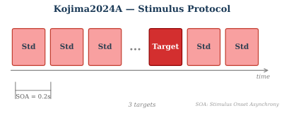

moabb.datasets.Kojima2024A#
- class moabb.datasets.Kojima2024A(subjects=None, sessions=None)[source]#
- [source]
Dataset Snapshot
Kojima2024A
A 3-class auditory BCI using three tone sequences based on auditory stream segregation. Musical tones were presented to subjects' right ear, and subjects attended to one of three streams while counting target stimuli. P300 activity was elicited by target stimuli in the attended stream.
P300 / ERP, 2 classes (Target vs NonTarget)
P300 / ERP Code: Kojima2024A 11 subjects 1 session 64 ch 1000 Hz 2 classes 1.7 s trialsPage ViewsUpdated: 2026-03-02 UTC30d: 8·all-time: 55#56 of 88 · Top 64% most viewedClass Labels: Target, NonTarget
Toggle quickstart code
from moabb.datasets import Kojima2024A dataset = Kojima2024A() data = dataset.get_data(subjects=[1]) print(data[1])
Citation & Impact
- Paper DOI10.1371/journal.pone.0303565
- CitationsLoading…
- Public APICrossref | OpenAlex
- Data DOI10.7910/DVN/MQOVEY
- PapersWithCodeDataset page
Stimulus Protocol
1.7s task window per trial · 2-class p300 / erp paradigm · 6 runs/session across 1 sessions
HED Event TagsHED tagsSource: MOABB BIDS HED annotation mapping.
TargetSensory-eventExperimental-stimulusVisual-presentationTargetNonTargetSensory-eventExperimental-stimulusVisual-presentationNon-targetHED tree view
Tree · Target
├─ Sensory-event ├─ Experimental-stimulus ├─ Visual-presentation └─ Target
Tree · NonTarget
├─ Sensory-event ├─ Experimental-stimulus ├─ Visual-presentation └─ Non-target
Channel SummaryTotal channels64EEG64 (eeg)EOG2Montagestandard_1020Sampling1000 HzReferenceright earlobeFilter{'bandpass': '0.1 Hz to 100 Hz'}Notch / line50 HzThis diagram is automatically generated from MOABB metadata. Please consult the original publication to confirm the experimental protocol details.
Class for Kojima2024A dataset management. P300 dataset.
Dataset description
This dataset [1] originates from a study investigating a three-class auditory BCI based on auditory stream segregation (ASME-BCI) [2].
In the experiment, participants focused on one of three auditory streams, leveraging auditory stream segregation to selectively attend to stimuli in the target stream. Each stream contained a two-stimulus oddball sequence composed of one deviant stimulus and one standard stimulus.
The sequence below illustrates an example trial. For instance, when D2 is the target stimulus, the participant attended to Stream2 and selectively listened for D2. In this case, D2 is the target, and D1 and D3 are considered non-target stimuli.
Stream3 ----- S3 -------- S3 -------- S3 -------- D3 -------- S3 ----- Stream2 -- S2 -------- S2 -------- D2 -------- S2 -------- S2 -------- Stream1 S1 -------- D1 -------- S1 -------- S1 -------- S1 -----------
Each participant completed 1 session consisting of 6 runs. Each run lasted approximately 5 minutes. In each run, all deviant stimuli (D1–D4) were presented approximately 60 times.
- Recording Details:
EEG signals were recorded using a BrainAmp system (Brain Products, Germany) at a sampling rate of 1000 Hz.
Data were collected in Tokyo, Japan, where the power line frequency is 50 Hz.
EEG was recorded from 64 scalp electrodes according to the international 10–20 system: Fp1, Fp2, AF7, AF3, AFz, AF4, AF8, F7, F5, F3, F1, Fz, F2, F4, F6, F8, FT9, FT7, FC5, FC3, FC1, FCz, FC2, FC4, FC6, FT8, FT10, T7, C5, C3, C1, Cz, C2, C4, C6, T8, TP9, TP7, CP5, CP3, CP1, CPz, CP2, CP4, CP6, TP8, TP10, P7, P5, P3, P1, Pz, P2, P4, P6, P8, PO7, PO3, POz, PO4, PO8, O1, Oz, O2
EEG signals were referenced to the right mastoid and grounded to the left mastoid.
EOG was recorded using 2 electrodes (vEOG and hEOG), placed above/below and lateral to one eye.
References
[1]Kojima, S. (2024). Replication Data for: An auditory brain-computer interface based on selective attention to multiple tone streams. Harvard Dataverse, V1. DOI: https://doi.org/10.7910/DVN/MQOVEY
[2]Kojima, S. & Kanoh, S. (2024). An auditory brain-computer interface based on selective attention to multiple tone streams. PLoS ONE 19(5): e0303565. DOI: https://doi.org/10.1371/journal.pone.0303565
from moabb.datasets import Kojima2024A dataset = Kojima2024A() data = dataset.get_data(subjects=[1]) print(data[1])
Dataset summary
#Subj
11
#Chan
64
#Trials / class
~130 NT / ~65 T
Trials length
1 s
Freq
1000 Hz
#Sessions
1
Participants
Population: healthy
Age: 22.5 (range: 22-23) years
Equipment
Amplifier: Brain Amp DC (Brain Products GmbH, Germany) and MR plus (Brain Products GmbH, Germany)
Electrodes: eeg
Montage: standard_1020
Reference: right earlobe
Preprocessing
Data state: raw
Data Access
DOI: 10.1371/journal.pone.0303565
Data URL: https://doi.org/10.7910/DVN/MQOVEY
Repository: Harvard Dataverse
Experimental Protocol
Paradigm: p300
Task type: auditory selective attention
Tasks: attend to Stream 1, attend to Stream 2, attend to Stream 3
Feedback: none
Stimulus: auditory musical tones
- convert_subject_to_subject_id(subjects)[source]#
Convert subject number(s) to subject ID(s). (In this dataset, subject IDs are encoded using alphabet letters.)
- data_path(subject, path=None)[source]#
Return the data paths of a single subject.
- Parameters:
subject (int) – The subject number to fetch data for.
path (None | str) – Location of where to look for the data storing location. If None, the environment variable or config parameter MNE_(dataset) is used. If it doesn’t exist, the “~/mne_data” directory is used. If the dataset is not found under the given path, the data will be automatically downloaded to the specified folder.
- Returns:
A list containing the Path object for the subject’s data file.
- Return type:
{kind=link}